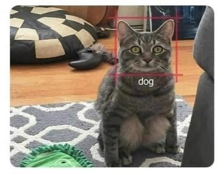
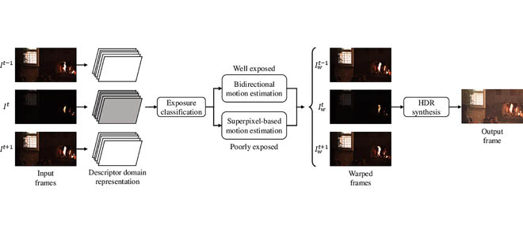

|
Tu Vo I'm a research scientist at KC Machine Learning Lab (ML2) in Seoul, South Korea, working on Computer Vision. (Last update: Feb 2022). I got the Master Degree from CILAB at Pukyong National University. Before that, I received B.S. degrees in Electrical from Hanoi University of Science and Technology. I am always open to new opportunities and collaborations. Please contact me if you are interested in my work or want to connect with me. |
 |
{kind=link}
News
|
ResearchI am interested in Computer Vision and Deep Learning. My research mainly focuses on finding solutions to low-level vision tasks such as Deblurring, High Dynamic Range Image or Low-light Image Enhancement. Some papers are highlighted. |
|
|
Benchmarking Model Training and Inference for Resource-Constrained Deep Learning
... Tu Vo ... ICCVW, 2023 Paper If you want to get your best model with a low budget. Take a look. |

|
Attention! Stay Focus!
Tu Vo CVPRW, 2021 Paper / Code A model to generate all-in-focus image from dual views. |
|

|
High Dynamic Range Video Synthesis Using Superpixel-Based Illuminance-Invariant Motion Estimation
Tu Vo, Chul Lee CVPRW, 2023 Paper Generating High Dynamic Range Video from alternative Low Dynamic Range Input Sequences. |